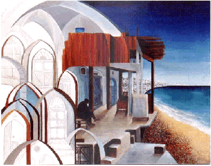

Title: Fisherman from Jaffa
Material : Oil on canvas, 60 x 70 cm
Year: 1996
The National Museum of Jordan, Amman
| T a m a m . . . |
 |
Title: Fisherman from Jaffa Material : Oil on canvas, 60 x 70 cm Year: 1996 The National Museum of Jordan, Amman |